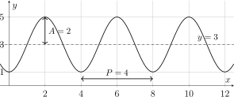
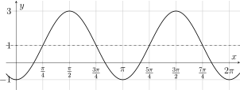
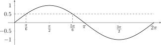
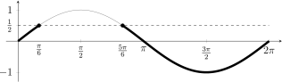

Hoofdstuk
9Interactieve herhaling: goniometrische functies
Leerplandoelstellingen (GO! Navigator)
Basisvorming (BV3_06)
-
• BV3_06.02 (MD 06.02) De leerlingen brengen met behulp van de grafiek, kenmerken van een functie in verband met de betekenisvolle situatie die door de functie beschreven wordt.
-
• BV3_06.08 (MD 06.08) De leerlingen tekenen de grafiek van de functie \(f(x)=\sin x\) vanuit de goniometrische cirkel.
-
• BV3_06.09 (MD 06.09) De leerlingen gebruiken transformaties van de vorm \(f(x)+k\), \(f(x-k)\), \(f(x/k)\) en \(k\cdot f(x)\) om de grafiek van een algemene sinusfunctie \(f(x)=a\cdot \sin [b(x-c)]+d\) op te bouwen vanuit de grafiek van \(f(x)=\sin x\).
-
• BV3_06.10 (MD 06.10) De leerlingen analyseren kenmerken van een algemene sinusfunctie aan de hand van de grafiek: domein, bereik, nulwaarden, tekenverloop, stijgen/dalen, extrema, symmetrie, periodiciteit en amplitude.
Gevorderde wiskunde (WD3_06.08)
-
• WD3_06.08.18 (MD 06.08.13) De leerlingen lossen eenvoudige veeltermvergelijkingen, rationale vergelijkingen, irrationale vergelijkingen, exponentiële vergelijkingen, logaritmische vergelijkingen en goniometrische vergelijkingen algebraïsch op.
-
– afbakening: deling van veeltermen
-
– afbakening: deling door \((x-a)\)
-
-
• WD3_06.08.21 (MD 06.08.07) De leerlingen leggen het verband tussen de grafiek en het voorschrift van een functie en haar kenmerken.
-
– afbakening: veeltermfuncties, rationale functies, (elementaire) irrationale functies, exponentiële functies, logaritmische functies \(f(x)=\log _a(x)\), goniometrische functies \(f(x)=\cos x\) en \(f(x)=\tan x\), cyclometrische functies, absolute waardenfunctie, meervoudig functievoorschrift
-
– afbakening: domein, bereik, nulwaarden, tekenverloop, stijgen/dalen/constant, extrema, constante/toenemende/afnemende stijging/daling, symmetrie, periode, amplitude, asymptotisch gedrag, gedrag op oneindig
-
-
• WD3_06.08.23 De leerlingen tekenen de grafiek van de functies \(f(x)=\cos x\) en \(f(x)=\tan x\).
I Periodieke functies
1 Samenvatting
Een functie \(f\) is periodiek als er een strikt positief getal \(P\) bestaat zodat
\[ \forall x\in \dom f : f(x+P)=f(x). \]
Het kleinste zo’n getal \(P\) is de periode. De grafiek schommelt rond de evenwichtsstand. De grootste uitwijking ten opzichte van die evenwichtsstand is de amplitude \(A\).
2 Probeer zelf

Schuiven we deze grafiek over \(4\) eenheden naar rechts, dan valt ze
samen met zichzelf: \(f(x+4)=f(x)\). Over \(8\) of \(12\) eenheden ook, maar de periode is de kleinste verschuiving: \(P=4\). De evenwichtsstand is \(y=3\) en de amplitude is \(A=2\).
3 Oefeningen
Oefening 1
Een periodieke functie \(f\) heeft periode \(3\). Verder is \(f(1)=5\) en \(f(2)=-1\). Bereken zonder grafiek:
-
(a) \(f(4)\)
\(f(4)=5\) \(f(4)=f(1+3)=f(1)=5\)
-
(b) \(f(-5)\)
\(f(-5)=5\) \(f(-5)=f(-5+2\cdot 3)=f(1)=5\)
-
(c) \(f(8)\)
\(f(8)=-1\) \(f(8)=f(8-2\cdot 3)=f(2)=-1\)
Oefening 2
In een haven schommelt het water tussen \(1.5\) m bij laagtij en \(6.5\) m bij hoogtij. Twee hoogtijen volgen elkaar op na \(12.5\) uur. We beschrijven de waterhoogte als een periodieke functie van de tijd.
-
(a) evenwichtsstand
\(y=4\) De evenwichtsstand ligt midden tussen laagtij en hoogtij: \(\dfrac {1.5+6.5}{2}=4\), dus \(y=4\).
-
(b) amplitude
\(A=2.5\) m De grootste uitwijking ten opzichte van de evenwichtsstand: \(A=6.5-4=2.5\) m.
-
(c) periode
\(P=12.5\) uur Na \(12.5\) uur herhaalt het patroon zich, dus \(P=12.5\) uur.
II De grafieken van sinus, cosinus en tangens
1 Samenvatting
Op de goniometrische cirkel hoort bij elke hoek \(x\) een punt \(P\).
-
• \(\sin x\) is de tweede coördinaat van \(P\). Zo ontstaat de sinusoïde.
-
• \(\cos x\) is de eerste coördinaat van \(P\). De cosinusoïde is de sinusoïde over \(\frac {\pi }{2}\) naar links verschoven.
-
• \(\tan x\) lezen we af op de raaklijn \(x=1\) aan de cirkel. Waar \(\cos x=0\) bestaat \(\tan x\) niet: daar heeft de tangentoïde een verticale asymptoot.
2 Probeer zelf
De sinus van de hoek \(x\) is de hoogte van \(P\). Zetten we die
hoogte uit boven \(x\) op de \(x\)-as, voor alle hoeken van \(0\) tot \(2\pi \), dan ontstaat de sinusoïde.
De cotangensfunctie \(\cot x=\dfrac {\cos x}{\sin x}\) heeft periode \(\pi \), nulwaarden \(x=\frac {\pi }{2}+k\pi \) en verticale asymptoten \(x=k\pi \).
3 Test jezelf
Vul de tabel eerst zelf in. Klik daarna op een vak om het te controleren.
| \(\sin x\) | \(\cos x\) | \(\tan x\) | |
| domein | \(\R \) | \(\R \) | \(\R \setminus \{\frac {\pi }{2}+k\pi \}\) |
| bereik | \([-1,1]\) | \([-1,1]\) | \(\R \) |
| periode | \(2\pi \) | \(2\pi \) | \(\pi \) |
| nulwaarden | \(x=k\pi \) | \(x=\frac {\pi }{2}+k\pi \) | \(x=k\pi \) |
| symmetrie | oneven | even | oneven |
Overal is \(k\in \Z \).
4 Oefeningen
Oefening 3
Waar of niet waar? Verklaar.
-
(a) De cosinusfunctie is even.
waar Waar: \(\cos (-x)=\cos x\). De grafiek is symmetrisch ten opzichte van de \(y\)-as.
-
(b) De periode van de tangensfunctie is \(2\pi \).
niet waar: \(P=\pi \) Niet waar. Ook \(\tan (x+2\pi )=\tan x\), maar de periode is de kleinste zo’n verschuiving, en dat is \(\pi \).
-
(c) De grafiek van \(y=\tan x\) heeft een verticale asymptoot \(x=\pi \).
niet waar: \(x=\pi \) is een nulwaarde Niet waar. \(\tan \pi =0\), dus \(x=\pi \) is een nulwaarde. De verticale asymptoten liggen waar \(\cos x=0\): \(x=\frac {\pi }{2}+k\pi \).
Oefening 4
Bepaal het teken zonder rekenmachine. Gebruik de goniometrische cirkel.
-
(a) \(\sin 4\)
negatief \(\pi \approx 3.14<4<\frac {3\pi }{2}\approx 4.71\). De hoek ligt in het derde kwadrant, dus \(P\) ligt onder de \(x\)-as: \(\sin 4<0\).
-
(b) \(\cos 4\)
negatief In het derde kwadrant ligt \(P\) links van de \(y\)-as: \(\cos 4<0\).
-
(c) \(\tan 4\)
positief \(\tan 4=\dfrac {\sin 4}{\cos 4}\) is een quotiënt van twee negatieve getallen, dus \(\tan 4>0\).
III De algemene sinusfunctie
1 Samenvatting
De grafiek van
\[ y=a\sin \bigl (b(x-c)\bigr )+d \qquad (b>0) \]
ontstaat uit die van \(y=\sin x\) door vier transformaties.
-
• \(a\): verticale uitrekking. De amplitude is \(A=|a|\). Is \(a<0\), dan is de golf bovendien gespiegeld.
-
• \(b\): horizontale verschaling met factor \(\frac {1}{b}\). De periode is \(P=\dfrac {2\pi }{b}\).
-
• \(c\): verschuiving over \(c\) naar rechts (naar links als \(c<0\)).
-
• \(d\): verschuiving over \(d\) naar boven. De evenwichtslijn is \(y=d\).
2 Probeer zelf
3 Raad het voorschrift

We lezen af: de toppen liggen op hoogte \(3\) en de dalen op
\(-1\). De evenwichtslijn ligt daar midden tussen, dus \(d=1\), en de amplitude is \(A=3-1=2\). Twee toppen liggen \(\pi \) uit elkaar, dus \(P=\pi =\frac {2\pi }{b}\) en \(b=2\). De grafiek gaat stijgend door de
evenwichtslijn in \(x=\frac {\pi }{4}\), dus \(c=\frac {\pi }{4}\). Een voorschrift is
\[ y=2\sin \left (2\left (x-\frac {\pi }{4}\right )\right )+1. \]
4 Oefeningen
Oefening 5
Geef de amplitude, de periode, de evenwichtslijn en de horizontale verschuiving.
-
(a) \(y=3\sin \left (2\left (x-\frac {\pi }{6}\right )\right )+1\)
\(A=3\), \(P=\pi \), \(y=1\), \(\frac {\pi }{6}\) naar rechts \(a=3\), \(b=2\), \(c=\frac {\pi }{6}\) en \(d=1\). Dus \(A=3\), \(P=\frac {2\pi }{2}=\pi \), evenwichtslijn \(y=1\) en een verschuiving over \(\frac {\pi }{6}\) naar rechts.
-
(b) \(y=-\frac {1}{2}\sin \left (\frac {x}{2}\right )-2\)
\(A=\frac 12\), \(P=4\pi \), \(y=-2\), geen verschuiving \(a=-\frac 12\), \(b=\frac 12\), \(c=0\) en \(d=-2\). Dus \(A=\left |-\frac 12\right | =\frac 12\), \(P=\dfrac {2\pi }{\frac 12}=4\pi \) en evenwichtslijn \(y=-2\). Omdat \(a<0\) is de golf gespiegeld ten opzichte van de evenwichtslijn.
-
(c) \(y=2\sin (3x+\pi )\)
\(A=2\), \(P=\frac {2\pi }{3}\), \(y=0\), \(\frac {\pi }{3}\) naar links Zet eerst \(b\) buiten haakjes:
\[ y=2\sin \left (3\left (x+\frac {\pi }{3}\right )\right ). \]
Dus \(a=2\), \(b=3\), \(c=-\frac {\pi }{3}\) en \(d=0\): \(A=2\), \(P=\frac {2\pi }{3}\), evenwichtslijn \(y=0\) en een verschuiving over \(\frac {\pi }{3}\) naar links.
Oefening 6
Een sinusoïde heeft als grootste waarde \(5\) en als kleinste waarde \(-1\). De periode is \(\pi \). In \(x=\frac {\pi }{4}\) gaat de grafiek stijgend door de evenwichtslijn. Geef een voorschrift van de vorm \(y=a\sin (b(x-c))+d\).
\(y=3\sin \left (2\left (x-\frac {\pi }{4}\right )\right )+2\)
\(\seteqnumber{0}{}{0}\)\begin{align*} d&=\frac {5+(-1)}{2}=2\\ a&=5-2=3\\ b&=\frac {2\pi }{P}=\frac {2\pi }{\pi }=2\\ c&=\frac {\pi }{4} \end{align*} Dus \(y=3\sin \left (2\left (x-\frac {\pi }{4}\right )\right )+2\).
IV Goniometrische vergelijkingen
1 Samenvatting
Voor de drie basisvergelijkingen geldt, met \(k\in \Z \):
\(\seteqnumber{0}{}{0}\)\begin{align*} \sin x=\sin \alpha &\iff x=\alpha +k\cdot 2\pi \ \text { of }\ x=\pi -\alpha +k\cdot 2\pi \\ \cos x=\cos \alpha &\iff x=\alpha +k\cdot 2\pi \ \text { of }\ x=-\alpha +k\cdot 2\pi \\ \tan x=\tan \alpha &\iff x=\alpha +k\cdot \pi \end{align*} Een vergelijking \(\sin x=a\) of \(\cos x=a\) heeft enkel oplossingen als \(-1\leq a\leq 1\). Een ingewikkeldere vergelijking herleiden we eerst tot zo’n basisvorm, eventueel met een samengestelde hoek zoals \(\sin (2x)=\frac 12\).
2 Probeer zelf

Voor \(\sin x=\frac 12\) is \(\alpha =\frac {\pi }{6}\), dus
\[ x=\frac {\pi }{6}+k\cdot 2\pi \ \text { of }\ x=\frac {5\pi }{6}+k\cdot 2\pi \qquad (k\in \Z ). \]
3 Oefeningen
Oefening 7
Los op in \(\R \).
-
(a) \(\sin x=-\dfrac {\sqrt 3}{2}\)
\(V=\left \{-\frac {\pi }{3}+k\cdot 2\pi ,\ \frac {4\pi }{3}+k\cdot 2\pi \ \middle |\ k\in \Z \right \}\)
\(\seteqnumber{0}{}{0}\)\begin{alignat*} {2} &&\sin x&=-\frac {\sqrt 3}{2}\\ \iff \quad &&\sin x&=\sin \left (-\frac {\pi }{3}\right )\\ \iff \quad &&x&=-\frac {\pi }{3}+k\cdot 2\pi \ \text { of }\ x=\pi -\left (-\frac {\pi }{3}\right )+k\cdot 2\pi \\ \iff \quad &&x&=-\frac {\pi }{3}+k\cdot 2\pi \ \text { of }\ x=\frac {4\pi }{3}+k\cdot 2\pi \\ &&V&=\left \{-\frac {\pi }{3}+k\cdot 2\pi ,\ \frac {4\pi }{3}+k\cdot 2\pi \ \middle |\ k\in \Z \right \} \end{alignat*}
-
(b) \(2\cos x+1=0\)
\(V=\left \{\frac {2\pi }{3}+k\cdot 2\pi ,\ -\frac {2\pi }{3}+k\cdot 2\pi \ \middle |\ k\in \Z \right \}\)
\(\seteqnumber{0}{}{0}\)\begin{alignat*} {2} &&2\cos x+1&=0\\ \iff \quad &&\cos x&=-\frac 12\\ \iff \quad &&\cos x&=\cos \frac {2\pi }{3}\\ \iff \quad &&x&=\frac {2\pi }{3}+k\cdot 2\pi \ \text { of }\ x=-\frac {2\pi }{3}+k\cdot 2\pi \\ &&V&=\left \{\frac {2\pi }{3}+k\cdot 2\pi ,\ -\frac {2\pi }{3}+k\cdot 2\pi \ \middle |\ k\in \Z \right \} \end{alignat*}
-
(c) \(\tan x=-1\)
\(V=\left \{-\frac {\pi }{4}+k\cdot \pi \ \middle |\ k\in \Z \right \}\)
\(\seteqnumber{0}{}{0}\)\begin{alignat*} {2} &&\tan x&=-1\\ \iff \quad &&\tan x&=\tan \left (-\frac {\pi }{4}\right )\\ \iff \quad &&x&=-\frac {\pi }{4}+k\cdot \pi \\ &&V&=\left \{-\frac {\pi }{4}+k\cdot \pi \ \middle |\ k\in \Z \right \} \end{alignat*}
-
(d) \(\sin x=2\)
\(V=\emptyset \)
\(\seteqnumber{0}{}{0}\)\begin{alignat*} {2} &&\sin x&=2\ \lightning \\ \text {want}\quad &&&-1\leq \sin x\leq 1\\ &&V&=\emptyset \end{alignat*}
Oefening 8
Los op in \(\R \). Werk eerst met de samengestelde hoek en keer daarna terug naar \(x\).
-
(a) \(\sin (2x)=\dfrac 12\)
\(V=\left \{\frac {\pi }{12}+k\cdot \pi ,\ \frac {5\pi }{12}+k\cdot \pi \ \middle |\ k\in \Z \right \}\)
\(\seteqnumber{0}{}{0}\)\begin{alignat*} {2} &&\sin (2x)&=\frac 12\\ \iff \quad &&\sin (2x)&=\sin \frac {\pi }{6}\\ \iff \quad &&2x&=\frac {\pi }{6}+k\cdot 2\pi \ \text { of }\ 2x=\pi -\frac {\pi }{6}+k\cdot 2\pi \\ \iff \quad &&2x&=\frac {\pi }{6}+k\cdot 2\pi \ \text { of }\ 2x=\frac {5\pi }{6}+k\cdot 2\pi \\ \iff \quad &&x&=\frac {\pi }{12}+k\cdot \pi \ \text { of }\ x=\frac {5\pi }{12}+k\cdot \pi \\ &&V&=\left \{\frac {\pi }{12}+k\cdot \pi ,\ \frac {5\pi }{12}+k\cdot \pi \ \middle |\ k\in \Z \right \} \end{alignat*} Bij het delen door \(2\) wordt ook de periode gedeeld: \(k\cdot 2\pi \) wordt \(k\cdot \pi \).
-
(b) \(2\sin \left (x-\dfrac {\pi }{4}\right )=\sqrt 2\)
\(V=\left \{\frac {\pi }{2}+k\cdot 2\pi ,\ \pi +k\cdot 2\pi \ \middle |\ k\in \Z \right \}\)
\(\seteqnumber{0}{}{0}\)\begin{alignat*} {2} &&2\sin \left (x-\frac {\pi }{4}\right )&=\sqrt 2\\ \iff \quad &&\sin \left (x-\frac {\pi }{4}\right )&=\frac {\sqrt 2}{2}\\ \iff \quad &&\sin \left (x-\frac {\pi }{4}\right )&=\sin \frac {\pi }{4}\\ \iff \quad &&x-\frac {\pi }{4}&=\frac {\pi }{4}+k\cdot 2\pi \ \text { of }\ x-\frac {\pi }{4}=\pi -\frac {\pi }{4}+k\cdot 2\pi \\ \iff \quad &&x&=\frac {\pi }{2}+k\cdot 2\pi \ \text { of }\ x=\pi +k\cdot 2\pi \\ &&V&=\left \{\frac {\pi }{2}+k\cdot 2\pi ,\ \pi +k\cdot 2\pi \ \middle |\ k\in \Z \right \} \end{alignat*}
V Goniometrische ongelijkheden
1 Samenvatting
Een goniometrische ongelijkheid lossen we in drie stappen op.
-
1. Los de bijbehorende vergelijking op: dat geeft de grenspunten.
-
2. Kijk op de cirkel of op de grafiek aan welke kant van de grenspunten de ongelijkheid klopt.
-
3. Schrijf de oplossingen op en tel er de periode bij op.
Bij \(<\) en \(>\) horen de grenspunten er niet bij, bij \(\leq \) en \(\geq \) wel. Een verticale asymptoot hoort er nooit bij.
2 Probeer zelf

Voor \(\sin x\leq \frac 12\) zijn de grenspunten \(\frac {\pi
}{6}\) en \(\frac {5\pi }{6}\). De grafiek ligt op of onder de rechte \(y=\frac 12\) op \(\left [0,\frac {\pi }{6}\right ]\) en op \(\left [\frac {5\pi }{6},2\pi \right [\). Tellen we er \(k\cdot 2\pi \) bij op,
dan vinden we alle oplossingen.
3 Oefeningen
Oefening 9
Los op in \([0,2\pi [\).
-
(a) \(\cos x>\dfrac 12\)
\(V=\left [0,\frac {\pi }{3}\right [\,\cup \,\left ]\frac {5\pi }{3},2\pi \right [\)
\(\seteqnumber{0}{}{0}\)\begin{alignat*} {2} &&\cos x&>\frac 12\\ \text {grenspunten:}\quad &&\cos x&=\frac 12\\ &&x&=\frac {\pi }{3} \ \text { of }\ x=\frac {5\pi }{3}\\ &&V&=\left [0,\frac {\pi }{3}\right [\,\cup \,\left ]\frac {5\pi }{3},2\pi \right [ \end{alignat*} Rechts op de cirkel is de cosinus groter dan \(\frac 12\). De ongelijkheid is strikt, dus de grenspunten horen er niet bij.
-
(b) \(\sin x\leq -\dfrac {\sqrt 2}{2}\)
\(V=\left [\frac {5\pi }{4},\frac {7\pi }{4}\right ]\)
\(\seteqnumber{0}{}{0}\)\begin{alignat*} {2} &&\sin x&\leq -\frac {\sqrt 2}{2}\\ \text {grenspunten:}\quad &&\sin x&=-\frac {\sqrt 2}{2}\\ &&x&=\frac {5\pi }{4} \ \text { of }\ x=\frac {7\pi }{4}\\ &&V&=\left [\frac {5\pi }{4},\frac {7\pi }{4}\right ] \end{alignat*} Onderaan op de cirkel is de sinus het kleinst. De grenspunten horen erbij.
-
(c) \(\tan x\geq 1\)
\(V=\left [\frac {\pi }{4},\frac {\pi }{2}\right [\,\cup \, \left [\frac {5\pi }{4},\frac {3\pi }{2}\right [\)
\(\seteqnumber{0}{}{0}\)\begin{alignat*} {2} &&\tan x&\geq 1\\ \text {grenspunten:}\quad &&\tan x&=1\\ &&x&=\frac {\pi }{4} \ \text { of }\ x=\frac {5\pi }{4}\\ &&V&=\left [\frac {\pi }{4},\frac {\pi }{2}\right [\,\cup \, \left [\frac {5\pi }{4},\frac {3\pi }{2}\right [ \end{alignat*} De tangens stijgt tot aan de asymptoten \(x=\frac {\pi }{2}\) en \(x=\frac {3\pi }{2}\), en die horen er nooit bij.
Oefening 10
Los op in \(\R \): \(2\sin x-1>0\).
\(V=\left \{x\in \R \ \middle |\ \frac {\pi }{6}+k\cdot 2\pi <x<\frac {5\pi }{6}+k\cdot 2\pi \text { met } k\in \Z \right \}\)
\(\seteqnumber{0}{}{0}\)\begin{alignat*} {2} &&2\sin x-1&>0\\ \iff \quad &&\sin x&>\frac 12\\ \text {grenspunten:}\quad &&\sin x&=\frac 12\\ &&x&=\frac {\pi }{6} \ \text { of }\ x=\frac {5\pi }{6}\qquad \text {in } [0,2\pi [\\ &&V&=\left \{x\in \R \ \middle |\ \frac {\pi }{6}+k\cdot 2\pi <x<\frac {5\pi }{6}+k\cdot 2\pi \text { met } k\in \Z \right \} \end{alignat*} Bovenaan op de cirkel, tussen de twee grenspunten, is de sinus groter dan \(\frac 12\).